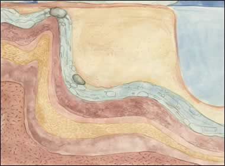

|

Most of the jade items from ancient China were made from nephrite. Nephrite is a very tough and hard material. This is the story of how an ancient jade item was formed. Deep in the earth's crust, over thousands of years, great changes in pressure and temperature took place. This combination of minerals, pressure and temperature caused some nephrite to form. The conditions needed to form nephrite are so specific that high quality nephrite is extremely rare. | |
| next... | |